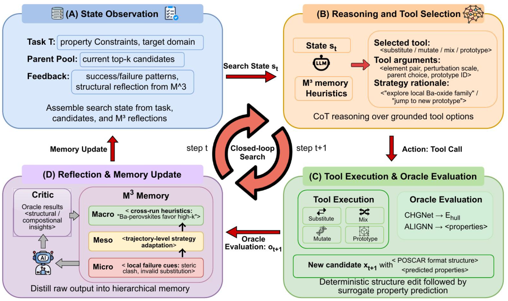
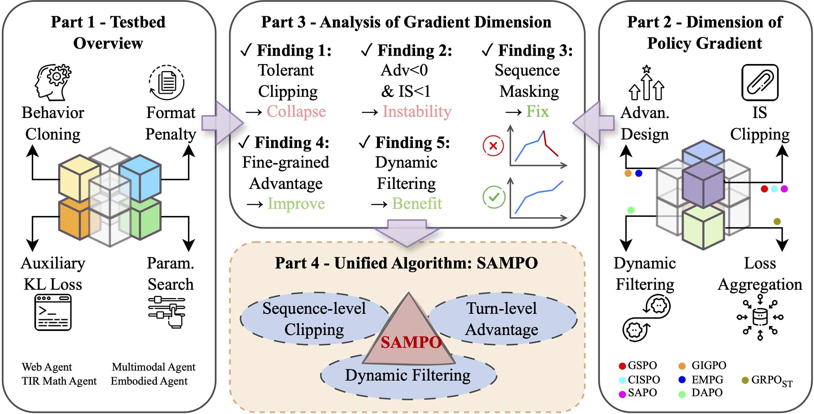
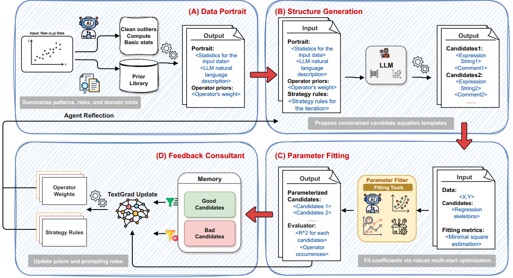

I am a master's student in Statistics at the University of Wisconsin–Madison, where I am fortunate to be advised by Prof. Xiao Luo. I am currently collaborating with Prof. Yu Zhang at Texas A&M University and Prof. Muhao Chen at UC Davis. I have also collaborated with Prof. Yizhou Sun and Prof. Wei Wang at UCLA. I received my bachelor's degree in Mathematics from Wuhan University.
My research focuses on LLM agents, Agentic LLM Post-training, and AI for Science. I am interested in developing efficient and auditable agentic systems for complex research workflows.
Publications and Manuscripts

TLDR
A tool-augmented LLM-agent framework with structured actions and trio-reflection for constrained novel crystal discovery.
TLDR
A systematic analysis framework for agentic reinforcement learning, with SAMPO for stable policy optimization.
TLDR
A multi-agent collaborative system for symbolic regression.Selected Honors
Outstanding Teaching Assistant, Wuhan University, 2025University Scholarship, Wuhan University, 2023, 2024
Academic Services
Reviewer, ACM Computing Surveys, 2026Reviewer, NeurIPS 2026 Workshop on AI for Drug Discovery: Bridging the Translation Gap
Reviewer, ACL Rolling Review (ARR), May 2026
Miscellaneous
Outside of research, I enjoy playing tennis and watching soccer, and I'm a fan of Kylian Mbappé. This semester, I'm also an intramural soccer referee at UW–Madison.